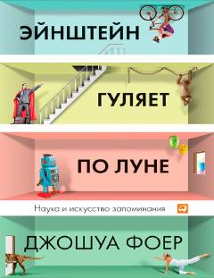

ЭГInson xotirasining yashirin imkoniyatlari va uni rivojlantirish usullari haqida qiziqarli tadqiqot.
Muallif inson xotirasining imkoniyatlarini o'rganish maqsadida bir yil davomida o'z xotirasini mashq qildiradi. Kitobda xotira mexanizmlari, uni rivojlantirish usullari va inson hayotidagi o'rni ilmiy hamda amaliy nuqtai nazardan tahlil qilinadi.